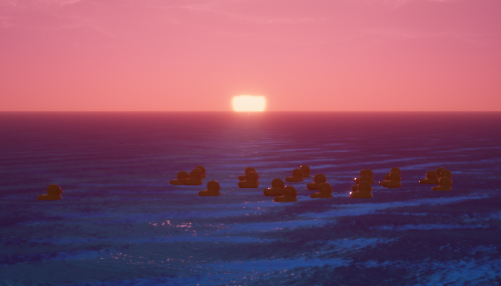

NDSU Computer Science Major
My name is Noah Kalthoff. I am a Computer Science Major attending NDSU. I was born and raised on a dairy, beef, and crop farm in central Minnesota. I am a proud member and the Director of Administration of the Fargo chapter of FarmHouse Fraternity. I am something of a rootbeer enthusiast and rubber duck connoisseur. I am a lover of the musical arts, both to perform and to be performed to.
My dream is to some day start my own Software Development company and create my own video games. I believe that such work is an art that can truly capture and share the emotions and ideas of its creator. A piece of art that is not constrained to a single physical location but is instead distributed across the globe digitally. Its artwork that allows each person to physically interact with it in their own unique and personal ways.